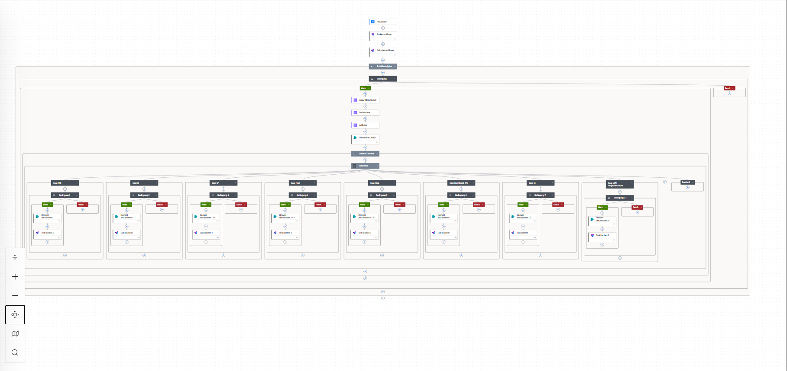

Digitalisierung der Auftragsabwicklung
April 2026

Rolle: Projektleiter, Entwickler
Eingesetzte Technologien: Microsoft Power Automate, Microsoft 365 Produkte zur Prozessintegration
Die Auftragsabwicklung ist der Prozess, der Neuaufträge von der Bestellung bis zum Versand durch das Unternehmen steuert.
Als Projektleiter und Entwickler digitalisierte und optimierte ich diesen Prozess mithilfe von Power Automate und weiteren Microsoft-Produkten. Manuelle Übergaben zwischen Vertrieb, Produktion und Versand wurden dabei durch automatisierte Workflows ersetzt.
Das Ergebnis: kürzere Durchlaufzeiten und deutlich reduzierte Fehlerquellen entlang des gesamten Auftragsprozesses.
Dieses Projekt entstand im Rahmen meiner Tätigkeit bei der INNO TAPE GmbH. Alle Rechte an Inhalten, Ergebnissen und Abbildungen liegen ausschließlich bei der INNO TAPE GmbH. Die Darstellung dient allein der Beschreibung meiner Rolle und Aufgaben.